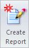

Analysis reports
Report content
You can use the Create Report command to produce a detailed report of the results generated by the analysis.

-
The body of the report contains program-generated information about the inputs into the analysis: model geometry and properties, materials, study type and properties, mesh type, loads, constraints, and assembly connectors.
-
The report title page identifies the software programs and version used to run the analysis, as well as the company name, date and time, and company logo.
-
Before generating the report, you can add an introduction and conclusion using the Create Report dialog box.
-
The results section includes model images as well as results data and values.
It is possible to generate a report for a study that is out of date or incomplete. If you do, the Study Properties section of the report will contain an additional section labeled Caveat Text, with a statement to this effect.
Report output format
You can choose the simulation results report output format in the Create Report dialog box. If you select the Web page (.html) option, it is displayed automatically in an Internet browser. This format has the advantage of providing hyperlinks between the various sections of the report.
The report is opened automatically using the program associated with the output format you choose.
To learn how, see Report simulation results.
Report name and location
Each report file is named using the following convention: Solid Edge filename_study name.report type extension.
Each simulation report is created in its own folder structure. The default directory is the Temp directory, but you can choose a different location using the Report Location option on the Create Report dialog box.
If an html report is created for a model file named Carrier.asm, and if the study name is Static Study 1, then:
-
The report naming convention is Carrier_Static Study 1_1.htm.
-
The naming convention for the folder structure is Carrier_Simulation\Static Study 1_1\Carrier_Static Study 1_1.htm.